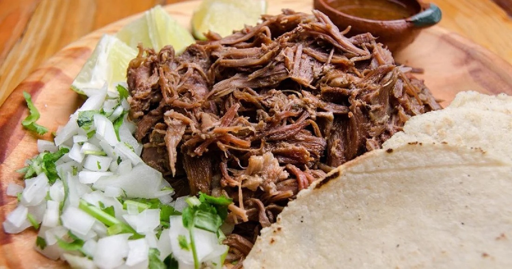

1 hoja de Maguey.
1 kg de carne de res, puede ser cachete o pescuezo.
Media cebolla partida en cuatro.
4 dientes de ajo pelados.
8 hojas de laurel.
1 cucharada de sal.
Agua necesaria para el proceso.
1.Primero, si conseguiste la hoja de maguey, tenemos que asarla en la lumbre hasta que se suavice para poder doblarla bien y sin romperse.
2.Acomodamos la carne sobre la hoja de maguey para envolverla bien. Para que no se deshaga el paquete con la carne, lo amarramos con un cordón de algodón.
3.En el fondo de la vaporera colocamos la cebolla, el ajo, el laurel, sal y el agua que sea necesaria para cubrir el fondo de nuestra olla vaporera.
4.El paquete con la carne envuelta se acomoda en el fondo de la vaporera, con todo lo demás. Después ponemos a hervir durante 3 a 4 horas hasta que la carne quede muy suave. Siempre hay que estar atentos a que no se acabe el agua. Si es necesario se le agrega más en las orillas de nuestra olla.
5.Cuando la carne esté muy suave y la podamos deshebrar con facilidad, es cuando podemos decir que está lista para unos buenos tacos de barbacoa.
6.Retiramos la hoja de maguey, después servimos con tortillas calientes, cebolla y cilantro picado, recomendamos incluir una salsa borracha para tener el complemento perfecto.
¡Listo! Ya puedes disfrutar de unos deliciosos tacos caseros de barbacoa desde la comodidad de tu hogar. Si estás buscando la vaporera ideal para esta receta, recuerda que en Aluminio Monarca contamos con los mejores utensilios de aluminio para ti. Con tu vaporera de Aluminio Monarca tendrás la cocción perfecta, calentamiento uniforme en todas tus comidas, variedad de diseños y todo a un gran precio. ¡Revisa nuestro catálogo y disfruta de las mejores recetas aquí